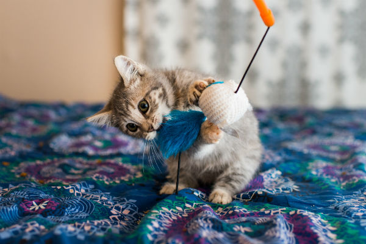
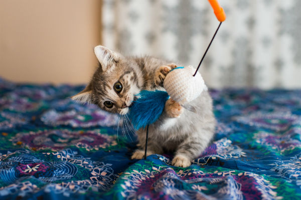
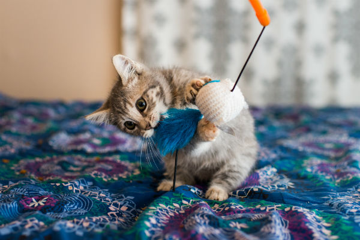
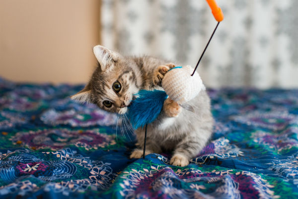

Brinquedos para distrair o seu amiguinho que envolvem estimular o pet a farejar, localizar, “perseguir” e apreender o alimento. Fazem parte desse grupo os brinquedos recheáveis, que liberam o alimento aos poucos, seja um petisco cortado em pedacinhos ou a própria ração.
EXEMPLOS